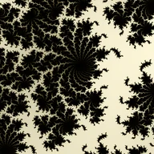

Andreas Faust
Essays, generative art and research · About
Generative art
-
-
The Mandelbrot set, drawn by the orbits of its escaping points
-

Random places on the border of the Mandelbrot set, in a single hue
-
Fractals from two Möbius maps, after Indra’s Pearls
-
Polyhedra built from simple seeds by Conway’s operators, in canonical form
Essays
Elsewhere
Archive